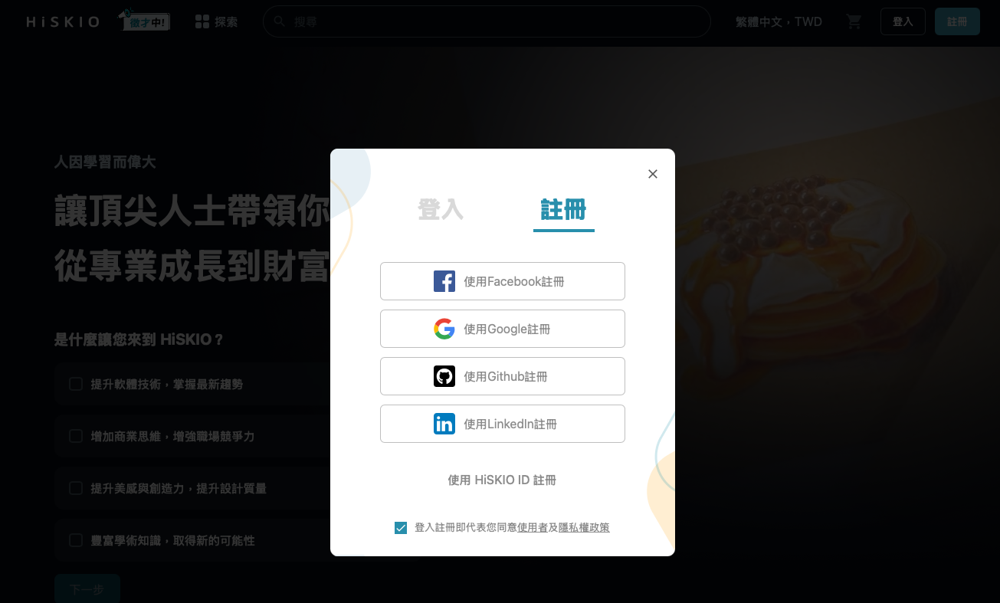
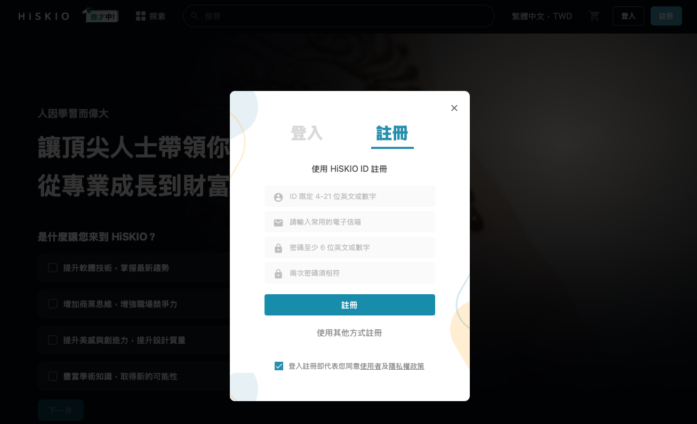
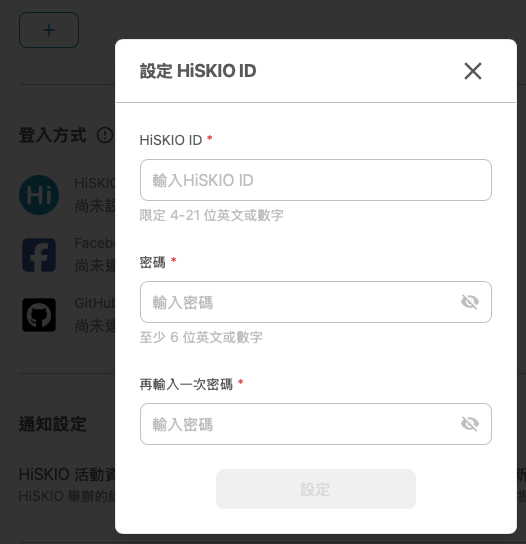

本篇說明 HiSKIO 帳號的註冊與登入機制、如何綁定多種登入方式，以及社群登入失敗時如何處理。
HiSKIO 的帳號機制
HiSKIO 提供 5 種註冊帳號的方式：HiSKIO ID（Email + 自訂密碼）、Facebook、Google、LinkedIn、GitHub。一個人可以擁有多個會員帳號，每一種登入方式都可以各自建立會員帳號——你可以彈性選擇分開使用（例如個人與工作各開一個），也可以把多種登入方式綁定到同一個會員帳號。
想用多種方式登入同一個會員帳號 → 要先綁定
如果你希望「不同登入方式都能進到同一個會員帳號」，必須先在【帳戶設定】中把它們綁定起來。
如果沒有綁定就用另一種方式登入，系統會直接為你建立一個新的會員帳號，這就是為什麼有些使用者會在登入後找不到課程：原因通常不是課程消失了，而是用了新的登入方式建立 & 登入了新的會員帳號。詳細排解流程請參考 帳號查詢與「課程不見了」排解。
註冊 HiSKIO 會員
註冊步驟
- 點選 HiSKIO 網站右上角的「註冊」
- 選擇你想要的註冊方式
兩種註冊方式
方式 A：社群登入註冊
可使用 Facebook、Google、LinkedIn、GitHub。一鍵授權後即完成註冊，不需額外記憶帳號密碼。

方式 B：HiSKIO ID 註冊
自行輸入 HiSKIO ID、Email 與自訂密碼來註冊，至信箱收取驗證信即完成註冊。

沒收到註冊驗證信件，該怎麼辦？
請先檢查「垃圾郵件」或「其他分類信件」資料夾。若還是沒收到，可透過以下管道聯繫客服：
若你的 Email 已使用某種社群方式註冊過 HiSKIO，再用同一個 Email 進行 HiSKIO ID 註冊會失敗。此時請直接用該社群方式登入，或參考下方「綁定多種登入方式」將社群帳戶綁定到 HiSKIO ID。
綁定多種登入方式
綁定的好處：未來不論用哪一種綁定過的方式登入，都會導向同一個帳戶，不會因為登入方式不同而找不到課程。
💡 建議至少設定兩種登入方式：當主要登入方式臨時出問題（例如 Facebook 帳號被鎖、忘記密碼），仍可用備用方式進入帳號繼續上課。
從 HiSKIO ID 帳號 → 登入方式
- 登入後，點選右上方個人頭像 →【帳戶設定】
- 在「登入方式」區塊選擇要綁定的社群
- 點選「綁定」並完成授權

從社群登入註冊的帳號 → 設定 HiSKIO ID
如果你一開始是用社群登入註冊（例如 Facebook），也可以為這個帳戶額外設定 HiSKIO ID 與密碼，未來就能用「HiSKIO ID + 密碼」登入。
操作流程：
- 登入後，點選右上方個人頭像 →【帳戶設定】→【登入方式】
- 在最上方的「HiSKIO ID」欄位點選「進行設定」
- 設定 HiSKIO ID 與密碼


完成設定後，這個帳戶即可使用「HiSKIO ID + 設定的密碼」登入。
社群登入失敗的處理方式
點擊 Facebook、Google、LinkedIn、GitHub 登入後，若遇到錯誤、頁面卡住或被導回未登入狀態，請依序檢查：
1. 確認你曾經用該社群註冊或綁定過
若該社群帳號從未在 HiSKIO 註冊或綁定，點擊社群登入會自動建立新帳號，並不會綁回你原本的帳戶。如果這不是你預期的，請改用原本的登入方式，或參考 帳號查詢與課程不見了排解 確認。
2. 確認該社群帳號本身可正常使用
請嘗試直接登入該社群網站（例如 Facebook 主站）。若社群帳號本身有問題，請先在該社群處理。
3. 重新整理頁面再試一次
偶爾是瀏覽器 cookie 或網路造成的暫時性問題。
仍無法解決
請聯繫客服並提供：
- 嘗試的登入方式（FB / Google / LinkedIn / GitHub）
- 錯誤訊息截圖（如有）
- 註冊時使用的 Email
注意事項
- 【帳戶設定】中綁定的「聯絡用 Email」不等於社群登入綁定：前者是接收通知信用的 Email，後者才是真正能用該社群進入帳號的綁定
- HiSKIO 不提供「課程帳號轉換」服務，請在購買課程前確認這個帳號是否是你未來會繼續使用的帳戶
更新時間： 07/05/2026